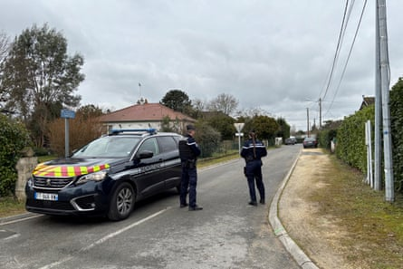
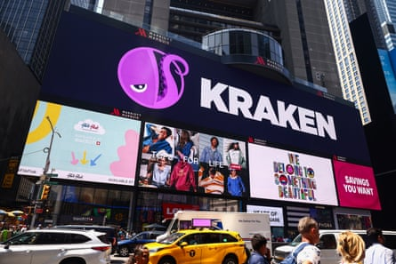

C ryptocurrency traders such as Mohammed Arsalan are prepared to watch their online assets expand and explode if they miss the right moment, making or breaking their fortunes in just minutes. All in a day’s work on the internet. Offline, though, they have found themselves less equipped for the consequences of affluence. A string of kidnappings has plagued the industry over the past year and left traders across the globe paranoid, fearful and keen to invest in physical security measures.
Arsalan grew up working class in Karachi, Pakistan. He hustles in any setting. At 14, he started a business exporting T-shirts overseas. By 17, the pandemic swept it all away. Inside, online and penniless, the booming world of Bitcoin beckoned him.
To learn how to trade digital coins, he would record himself explaining how the markets worked. His phone didn’t have enough storage to keep the videos, so he’d upload them onto Facebook groups. To his surprise, people were watching.
Arsalan says he went from $24 to $340,000 in five years. Along the way, the 23-year-old amassed more than 160,000 followers across various social media channels.
“Crypto is my bloodline,” he says. “It’s the only business that accepted me when I was poor.”
But a knock at the door on Christmas Day, 2024, would reveal the price of his audience. A group of men bundled him into the back of a flashing police car. They darted through checkpoints with ease, driving further away from Karachi and into the night. After an hour, they stopped. With a gun to his temple, Arsalan was ordered to take out his phone, reset its passwords, and hand it over. Holding the keys to his kingdom, the car sped away.
Once home, Arsalan ran to the computer and opened his Binance wallet. It was empty. As he stared at the zeroes on the screen, five years of sacrifice washed over him. 16-hour days alone in his office. Parties unattended. Purchases never made. Life as Pakistan’s cryptocurrency posterboy was over.
“I made this money from very, very hard work,” he says. “After this case, I will not trust anyone.”
Increase in kidnappings
Arsalan’s abduction is not an isolated event; kidnappings of cryptocurrency industry figures have surged in the past 18 months. There have been at least 231 physical attacks against digital asset holders to date, according to news reports . Almost a third of these have taken place since the start of 2024.
This year, a single French gang cut off the finger of an entrepreneur, doused an influencer’s father in gasoline and tried to snatch a CEO’s daughter from the streets of Paris, according to French police. An Italian investor was tortured with a chainsaw and taser for weeks in a New York City townhouse, local police said. A British trader was allegedly held captive in a Spanish hotel room. A popular influencer in Houston, Texas, was held at gunpoint and pistol-whipped in her own home while her three assailants demanded millions in cryptocurrency, according to local news reports . The list goes on.
As the industry matures, so does the cybersecurity guarding exchanges and wallets. The value stored within these digital vaults is soaring. The result: hacks are becoming heists. Cryptocurrency has long suffered from sophisticated and devastating digital attacks. Now, however, thefts are manifesting in the offline world, too. For the industry’s high-rollers, the targets on their backs have never felt heavier.
Police officers stand alert on a street in Mereau, near Vierzon, central France, as they secure the area following the kidnapping of David Balland, co-founder of crypto company Ledger.Photograph: Tom Masson/AFP/Getty Images
“Everybody’s a bit on edge,” says Louis d’Origny, the founder of FTXCreditor, a platform that buys bankruptcy claims. “In five minutes, you can find someone’s address. You can see our wallets online. You can see millions of dollars a day transacting out of these wallets. You’d be very tempted to show up at a house with a machete.”
Recent attacks have even led his co-founder to move house, after realizing his home address was available online.
Navigating an increasingly dangerous offline world, the industry is on edge, feeling as though securing their empires now falls to them as law enforcement struggles to keep up.
Cost of blockchain fortunes
Building one’s fortunes on blockchains entails novel risks.
Firstly, blockchains, the technology on which cryptocurrency is based, create public ledgers, so balances and transactions are visible. Every online wallet corresponds with an address in the form of a randomly generated series of characters. To avoid hacking, bigger sums are typically stored offline, on a small piece of hardware called a “cold wallet”, which also corresponds to a public address. Assailants invade homes to steal devices or force hostages to unlock their online wallet at gunpoint.
Criminals have started to find who owns which wallet, by using illicit software to analyze blockchain data. Other times, they will hack exchanges to access personal data, as was the case last month, when Coinbase support agents in India were bribed to leak the data of 70,000 users.
“A lot of these [crypto] guys thought they were moving around in silence. But, people are now able to find out that they are actually some of the richest guys in their cities,” says says a US-based founder and trader, speaking on the condition of anonymity.
Secondly, transactions are instant and permission-less – kidnappers don’t need a bank to approve their withdrawal. This can also make looted funds easier to hide. Assets are swiftly sent to various decentralized exchanges, which do not require know-your-customer information. Once there, funds can’t be frozen by centralized entities like Binance or Coinbase.
New bodyguards and new guns
In Karachi, Arsalan’s kidnappers were found within 48 hours. The two policemen among them had been bribed to help orchestrate the plan. Following the attack, Arsalan was offered protection from three other officers and a police car. But, fearing this could actually endanger him further, he declined.
For many of crypto’s kings and queens, unfettered access to one’s money via blockchains can feel buffered from institutional corruption. “There is no justice in Pakistan if you’re poor,” says Arsalan. “But decentralization means there are no institutions, no people, no banks … I own this money.”
But self-custody comes with a downside: there are fewer middlemen deterring a thief. This means taking matters into their own hands – or a pair they’ve hired.
“I used to like my space away from my [bodyguards], but now I want them closer,” says the anonymous US-based founder and trader, who doesn’t reveal his security arrangements to anyone, even his close circle. “In crypto, no one trusts anybody. Half of these guys are scammers,” he says. Over the past month or so, his two guards have not left his sight – even for walks around the block. “Everyone’s being a lot more cautious.”
Over the past six months, Jethro Pijlman’s global security services firm, Infinite Risks International, has seen a rise in cryptocurrency investors from western cities wanting protection. Requests range from safeguarding team meetings to guarding entire families around the clock.
Paris leads when it comes to new requests, says Pijlman, as France emerges as a hotspot for attacks, particularly after the high-profile kidnapping in January of David Balland, the entrepreneur whose finger was severed. In mid-June, an investor was abducted from a Paris suburb, while his partner was ordered to deposit the key to his cryptocurrency account.
Laure Beccuau, a Paris prosecutor, speaks after Balland and his partner were kidnapped from their home and later released by the French Gendarmerie, in Paris, on 23 January 2025.Photograph: Thibaud Moritz/AFP via Getty Images
The Ethereum Community Conference takes place at the end of June in Cannes, but the mood will be different from last year. It will feature the “most comprehensive security effort in the event’s history”, conference organizers said in a statement. For the first time, local police, special forces and the coast guard are being deployed to the site. Prepping security began almost a year ago, taking three times longer than usual, according to Bettina Boon Falleur, head of EthCC.
Companies are also taking measures to protect their staff.
Kraken, the second-largest exchange in the US, has deployed armed guards to accompany its top executives at all times, including outside their homes, according to a source familiar with the matter.
Matthew Liu, co-founder of the cryptocurrency Origin Protocol, was among the attendees of Donald Trump’s private gala for the top owners of his token last month, a guest list which was leaked to the New York Times . Liu says his company is evaluating hiring a team of bodyguards for trips.
“It’s a cost, but the cost of getting kidnapped or dealing with violence? It’s very, very scary,” says Liu. He’s also begun learning how to shoot a firearm and using a multi-signature wallet, whereby multiple people across the world need to sign-off on a payment.
His company has also introduced a new rule when the team goes to conferences: no posting until after the event.
“Many crypto investors are increasingly conscious of their exposure, especially after publicly sharing – or oversharing – details of their success and affluent lifestyles online,” says Pijlman in regards to his clients. Indeed, for an industry that’s chronically online, its titans have often built large social media followings, while their wealth stays encrypted in anonymous blockchains. “This illusion of invisibility may have led to a false sense of security.”
Wiped out life savings
For Arsalan, he watched his savings be chopped up and sprinkled across the cryptographic abyss. Over the next four months, he fell into a deep depression. He went offline and relied on whatever handouts his father could afford to give him. He considered ending his life, he says.
As Arsalan’s case demonstrates, kidnappers haven’t exclusively targeted only multimillionaires or only westerners.
Between 2020 and 2023, a Florida-based gang accessed the personal data of everyday cryptocurrency investors, and were able to steal from their wallets remotely.
The gang then carried out four home invasions against the same victims, spanning North Carolina, Texas and Florida, according to the US Department of Justice. Account holders were forced to unlock their wallets at gunpoint, while their families were tied up. One man’s mother was tortured. Another man was abducted and found 120 miles from his home.
A Kraken ad in New York last year.Photograph: Beata Zawrzel/NurPhoto via Getty Images
Two of the attacks targeted seniors, court documents show .
“I always dreamed of having a good retirement. I worked for it. I feel like I deserved it,” one victim, 70, told the court during the sentencing. Her husband has Parkinson’s. They’d hoped to take one last trip together – “to have at least some good years, good times”, she said. The couple lost $3m in cryptocurrency at 2022 prices via wire fraud. Wanting more, the gang invaded their home and held them at gunpoint to claim whatever was left. Their portfolio would be worth nearly $10.7m today.
“One whole life of savings and you just took it all,” she said.
Insuring assets
In the case of the retirees, the judge ordered the defendants to pay restitution to the victims. Receiving it looks unlikely.
Despite the burgeoning risks, only 10% of cryptocurrency holders across the world have coverage on their digital assets, according to a report by insurance firm GlobalData. Only two insurers offer kidnapping and ransom (K&R) coverage for crypto companies: Aon and Canopius. Glenn Morgan, SVP, head of digital assets at Aon, says he’s seen an increase in clients asking about coverage in recent months. Amid the surge, insurers may be on the eve of a windfall: last month NBC News reported that three crypto-specific insurance companies are working on K&R policies.
From the moment Arsalan checked his balance, he knew any chance of recovery would fall to him. Without the help of law enforcement, he’s been able to trace and recover about $160,000 of cryptocurrency, while the police have seized $60,000 in cash and a luxury car. It’s all now held by local police as case property. He thinks it’ll be at least six years before it’s returned to him, given the pace of Pakistan’s courts.
He says seven people have reached out to him with similar ordeals they didn’t report. Trading digital assets in Pakistan is a legal gray area, as banks are forbidden from facilitating transactions. When asked why they targeted crypto traders, the kidnappers said they thought victims wouldn’t have legal recourse, according to Arsalan.
In the meantime, Arsalan trades on. He wants to rebuild within a year: “They grabbed my money but they did not grab my brain.”
He’s also returned to social media, posting his first video in May. No amount of threats will make him give up crypto, he says. Despite all of its risks, public ledgers still feel safer to him than institutions.